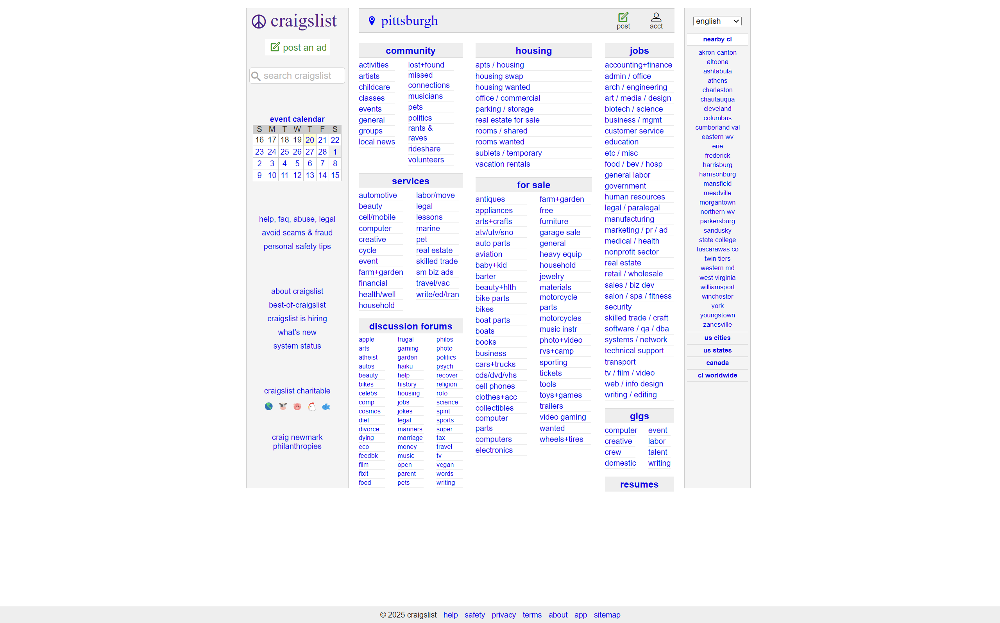
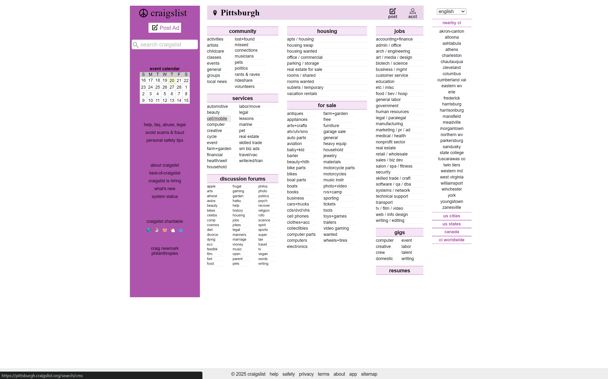
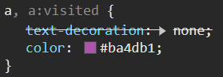
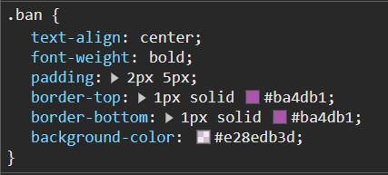
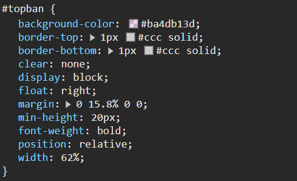

<link rel="stylesheet" href="EditWebpage.CSS">
<main>
    <title>web page 1</title>
    <body>
        <div class="creators" id="creators">
            <header>
                <h3>Created by Maximilian Tiriobo</h3>
            </header>
        </div>

        <h1>Webpage Before Edit </h1>
        
        <br>
        <h1>Webpage After Edit</h1>
        
        <p>For the 60, 30, 10 rule, I decided to keep white the primary color because it does not jump out
            <br> of the page all that much. I then decided to make the secondary 
            <br> color pink because that is the official logo entry and finally the lonesome color is black to make the text readable.
        </p>
        <h1>Code Sample 1</h1>
        <h2>made the text on the left bar's color in theme with teh rest of the page.</h2>
        
        <h1>Code Sample 2</h1>
        <h2>added the lighter lighter pink tone to the middle dividers: </h2>
        
        <h1>Code Sample 3</h1>
        <h2>made the top bar background light pink with black text and bolded.</h2>
        


    </body>
</main>